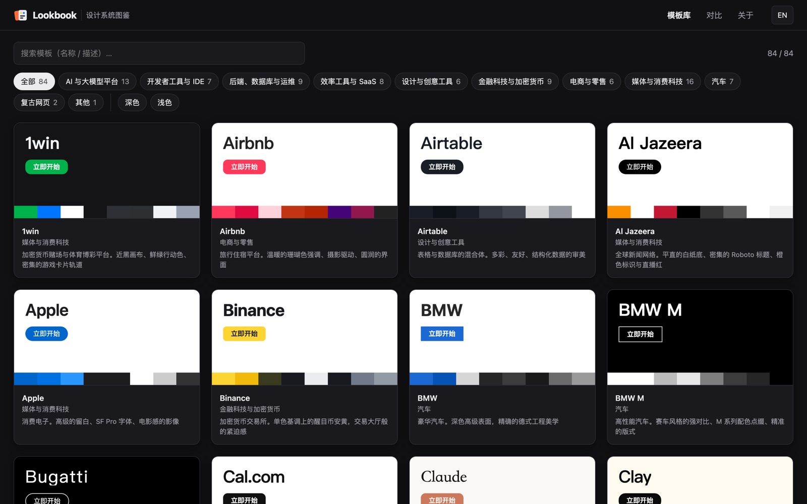
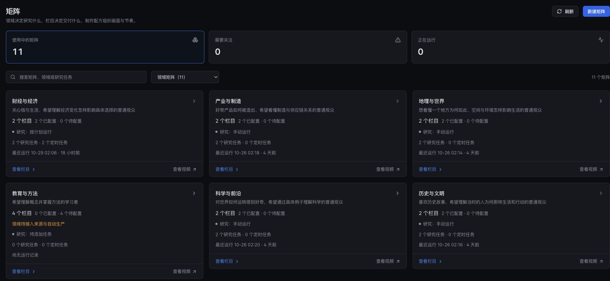
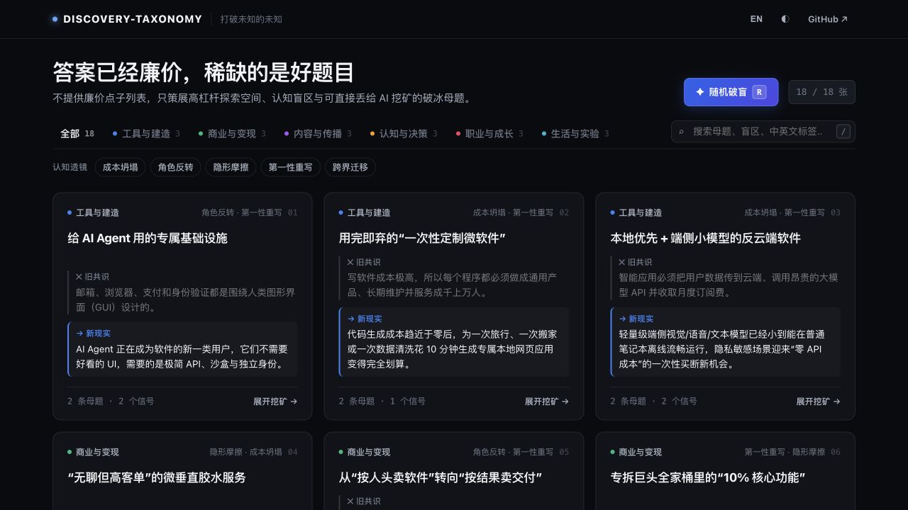

01 / Thought 思考02 / Structure 结构03 / Form 创造
From Thought to Form.
从思考到创造。

网站 / 工具
Lookbook设计系统图鉴
把 80 余套知名产品的设计系统渲染成可以直接看、直接比、直接拿走的页面。
80+套设计系统
10个类别
2种界面语言

Aide · 本地 AI 桌面入口软件 / macOS 应用在 Mac 上用快捷键唤起本机 AI，处理选中文字、截图和桌面任务。

研映 Research2Video · 从研究到视频软件 / 工作流围绕栏目持续研究、写稿、制作视频，并管理多平台投稿的本地创作工作台。

Radar · 信息雷达软件 / macOS 应用用自然语言建立关注，定期直接采集，给出带原始链接的事件。

PersonalSpace · 原生 macOS 个人数字空间软件 / macOS 应用本地优先的个人资料库：只读授权文件夹，搜索预览，识别事务并提醒。

DISCOVERY-TAXONOMY · 打破未知的未知网站 / 探索工具发现值得继续追问的方向：对照旧假设与新变化，带着可填写的 AI 母题展开探索。
其他作品 Glint · 微光 · Primal OS · Web3 Interactive Atlas · 人类知识交互式分类图谱 · 超级个体工具箱 · 现代 AI 原理互动科普馆 · 问笺馆 · 提示词图谱 · Atlas Methods · 语言表达分类体系 · 语义方向分类体系 · Application Atlas · P Atlas 全部作品 →